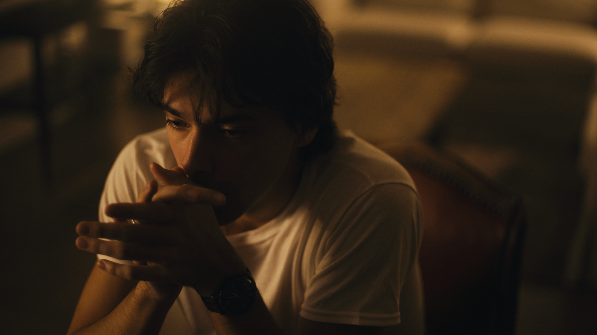
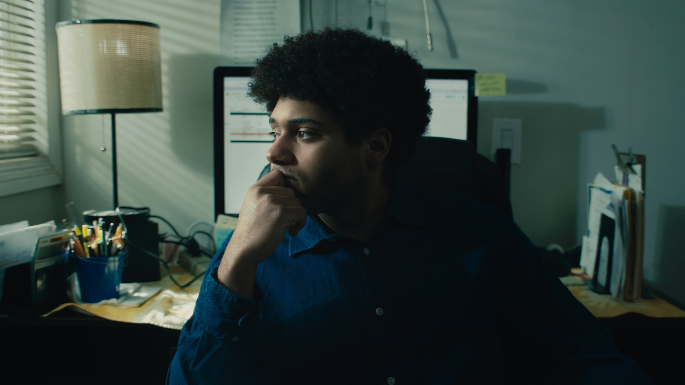
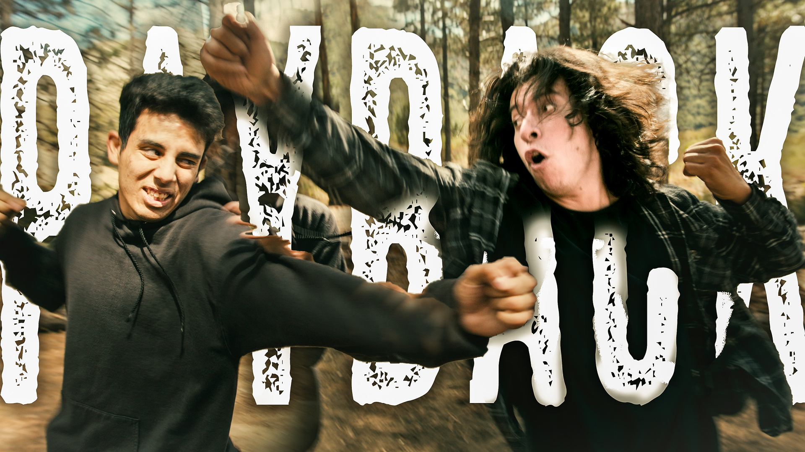
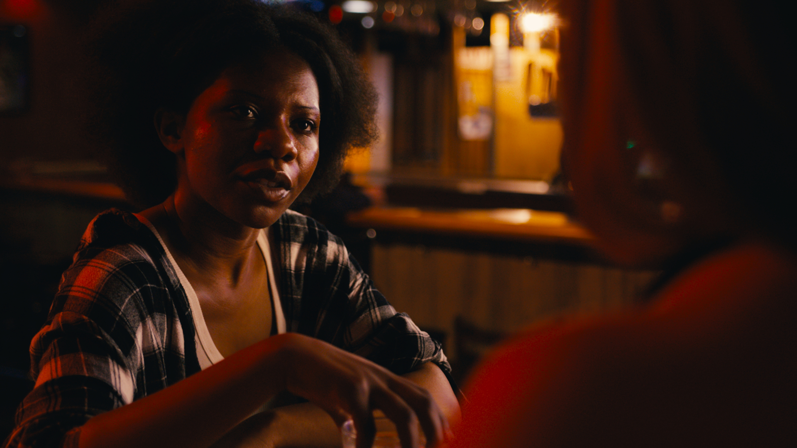

All My Sons
Dramatic adaptation of the Arthur Miller play of the same name, starring Rick Zieff and Benjamin Stivale

Dramatic adaptation of the Arthur Miller play of the same name, starring Rick Zieff and Benjamin Stivale

A short film directed by Eric Chavez

Micro short starring Joseph Olmeda and Joshua Muro
Dramedy short film starring Autumn Citrine and Logan Levack

Film by Gianni Sacco and Miryam Orozco